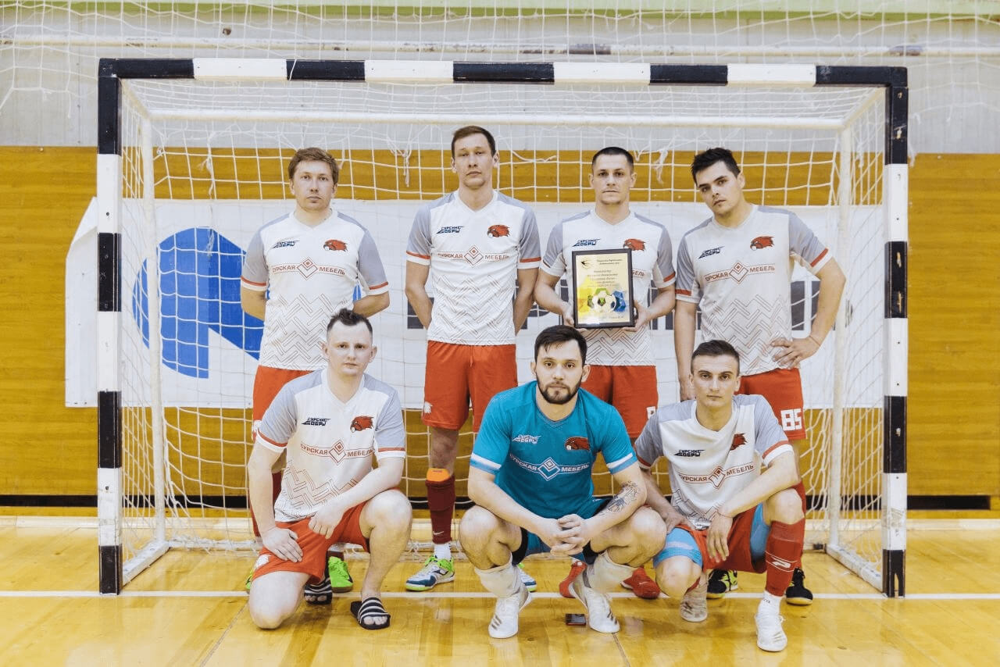
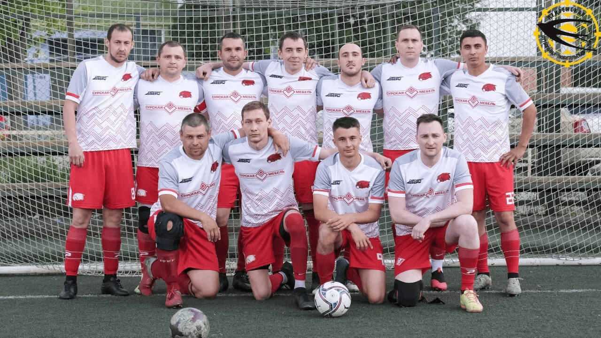

${require('./common.blocks/page-cover/page-head.html')}

<div class="page-wrapper">
	<div class="container">
		<h1 class="page-title">Футбольная команда «Сурские бобры»</h1>
		<div class="team">
			<div class="team__gallery">
				<div class="team__gallery-item">
					
				</div>
				<div class="team__gallery-item">
					
				</div>
			</div>
			<div class="team__text">
				<p>Мы все знаем, что корпоративный спорт связывает сотрудников общими ценностями и интересами, делает их командными игроками в достижении целей компании. Именно поэтому успешные предприятия развивают командные виды спорта.</p>
				<p>И наша фабрика не стала исключением, с 2016 года наши сотрудники собирались на любительские матчи и играли в футбол в свободное от работы время. Как оказалось, в компании много работников, предпочитающих активный отдых. В 2019 году формируется футбольная команда «Сурские бобры» и начинает свое выступление в открытом турнире по мини-футболу в Пензенской любительской футбольной лиге.</p>
				<p>В состав команды входят сотрудники фабрики «Сурская мебель» из разных подразделений: складской службы, производства, административного корпуса и всех их объединяет любовь к футболу. Поддерживать спортивную форму ребятам помогают регулярные тренировки, которые организуются компанией. Совместные тренировки помогают ребятам не только достойно представлять свою команду на футбольных матчах, но и способствуют сплочению команды для выполнения трудовых задач.</p>
				<p><b>«Сурские Бобры» – это гордость фабрики и ее сотрудников. Поздравляем наших ребят с регулярными победами и желаем не останавливаться на достигнутом! Ведь спорт и здоровый образ жизни сегодня имеют большое значение. И таким образом, ребята своим примером задают спортивный тон и настраивают коллег активно проводить досуг.</b></p>
			</div>
		</div>
	</div>
</div>

${require('./common.blocks/page-cover/page-foot.html')}